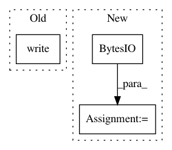

d7ba4f82daac42de28d5a35fcc6379551d9ac905,snips_nlu/pipeline/processing_unit.py,ProcessingUnit,from_byte_array,#Any#Any#,117
Before Change
with temp_dir() as tmp_dir:
archive_path = (tmp_dir / cleaned_unit_name).with_suffix(".zip")
with archive_path.open(mode="wb") as f:
f.write(unit_bytes)
unzip_archive(archive_path, str(tmp_dir))
processing_unit = cls.from_path(tmp_dir / cleaned_unit_name,
**shared)
return processing_unit
After Change
cleaned_unit_name = _sanitize_unit_name(cls.unit_name)
with temp_dir() as tmp_dir:
archive_path = (tmp_dir / cleaned_unit_name).with_suffix(".zip")
file_io = io.BytesIO(unit_bytes)
unzip_archive(file_io, str(tmp_dir))
processing_unit = cls.from_path(tmp_dir / cleaned_unit_name,
**shared)
return processing_unit
In pattern: SUPERPATTERN
Frequency: 3
Non-data size: 3
Instances
Project Name: snipsco/snips-nlu
Commit Name: d7ba4f82daac42de28d5a35fcc6379551d9ac905
Time: 2018-11-13
Author: dorian.hoxha@gmail.com
File Name: snips_nlu/pipeline/processing_unit.py
Class Name: ProcessingUnit
Method Name: from_byte_array
Project Name: autorope/donkeycar
Commit Name: 558cf909ff79341e699cf872082231f83f4cdc50
Time: 2017-02-08
Author: wroscoe@gmail.com
File Name: donkey/remotes.py
Class Name: CameraMJPEGHandler
Method Name: get
Project Name: DT42/BerryNet
Commit Name: 233019f4771285bb79c7f8e2511d91baa401f2e6
Time: 2019-11-09
Author: paulliu@debian.org
File Name: berrynet/client/telegram-bot.py
Class Name:
Method Name: on_message